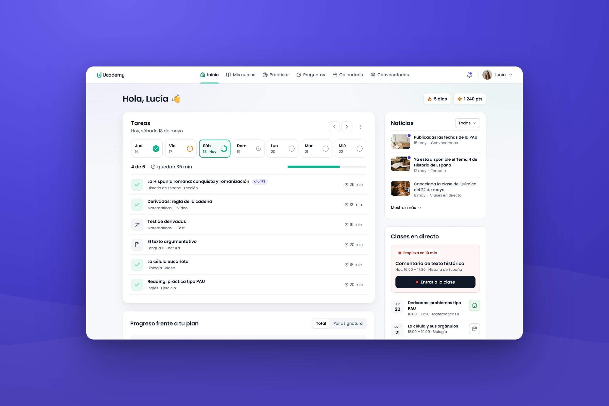

Redesigning the student dashboard
The challenge
Around 5,000 Ucademy students a day landed on a dashboard that didn’t show what to study next or where their courses were. New students got lost, and many turned to Customer Care just to find their way.
What I did
I redesigned the dashboard around today’s study plan, put every course, test and contact one click away, and added an onboarding to get new students started in their first week.
The outcome
Students reach a main action twice as fast, 50%+ follow their study plan and 40%+ of new students complete First steps in their first week.
Decisions
Impact
Students switched courses without asking Customer Care, and messages reached the right channel. The welcome tour and First steps helped them understand the platform from their first visit.
faster to reach a main action
of students follow their study plan
of new students complete First steps in week one
students open the dashboard every day
Learnings
Customer Care knows first
What students ask Customer Care shows where the product is failing them. I review those questions alongside the analytics.
Decide what onboarding should move
Before building an onboarding, decide which behaviour it should change. Then measure that from day one.
Retention lives in the core product
Students completed the tour and First steps, but cancellations depended on the course content. Onboarding opens the door, and what keeps students is what they came for.